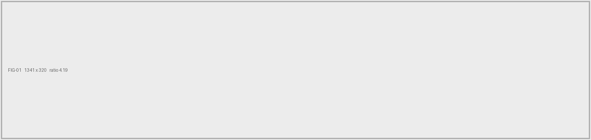
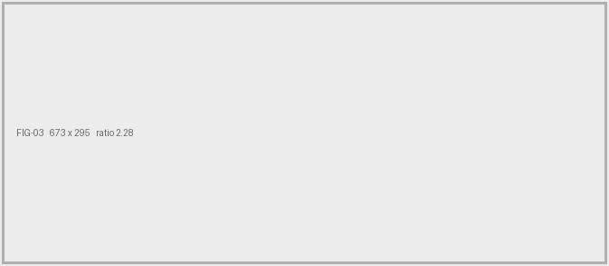

DR-0NN
Dokumentgjennomgang · [[DATO]]
Produktdatablad [[PRODUKT]],
lest som vedlegg til tilbudet.
Det gjeldende publiserte databladet for [[PRODUKT]] er lest mot kravspesifikasjonen i Bilag 2, krav for krav. Ingenting her er en poengsetting. Det er oppdragsgiver som gir poeng.
Metode
Bilag 2 stiller seksti nummererte krav. Tjueseks gjelder leveranseplan, opsjonspris eller reklamasjonsprosedyre, som intet produktdatablad besvarer. Trettifire gjenstår.
Besvart betyr at dokumentet oppgir det oppdragsgiver spør om. Delvis betyr nær, men ikke på poenget. Mangler betyr at det ikke finnes noe å peke på.
Resultatet
[[Ord]] av
trettifire
kan
besvares.
Krav [[liste]]. [[hva de dekker, én frase]].
Krav [[liste]]. [[hvorfor hver er delvis]].
Krav [[liste]]. [[det ene som er verdt å si om dem]].
Vurdert som ett dokument. [[Hva resten av det publiserte settet er, og om manglene gjelder hele serien.]]
Funn / Ark 2
DR-0NN
Fire ting en evaluator ser først.

Funn 01 / Krav [[n]][[ · vekt av 100]]
[[Påstand, maks 38 tegn.]]
«[[Kravet, ordrett. Maks 80 tegn.]]»
[[Hva dokumentet gjør med det. Maks 90 tegn.]]
![[[Hva utsnittet viser, for en leser som ikke ser det.]]](fig-02.png)
Funn 02 / Krav [[n]][[ · vekt av 100]]
[[Påstand, maks 38 tegn.]]
«[[Kravet, ordrett. Maks 80 tegn.]]»
[[Hva dokumentet gjør med det. Maks 90 tegn.]]

Funn 03 / Krav [[n]][[ · vekt av 100]]
[[Påstand, maks 38 tegn.]]
«[[Kravet, ordrett. Maks 80 tegn.]]»
[[Hva dokumentet gjør med det. Maks 90 tegn.]]
![[[Hva utsnittet viser, for en leser som ikke ser det.]]](fig-04.png)
Funn 04 / Krav [[n]][[ · vekt av 100]]
[[Påstand, maks 38 tegn.]]
«[[Kravet, ordrett. Maks 80 tegn.]]»
[[Hva dokumentet gjør med det. Maks 90 tegn.]]
[[Én avsluttende linje. Noe sant som ikke er et funn.]]